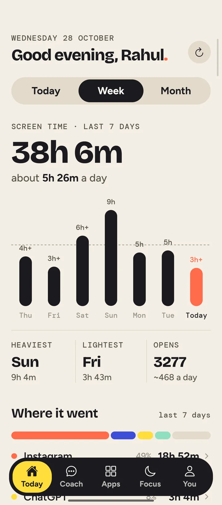
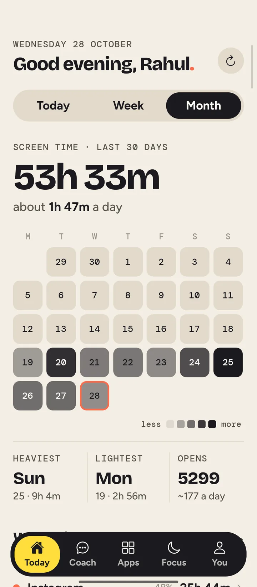
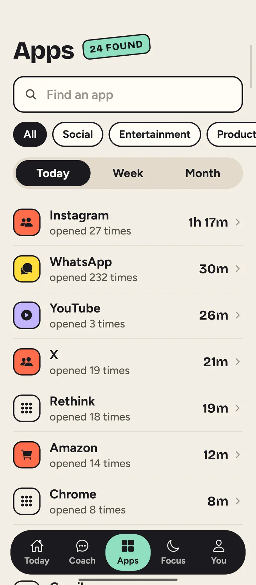
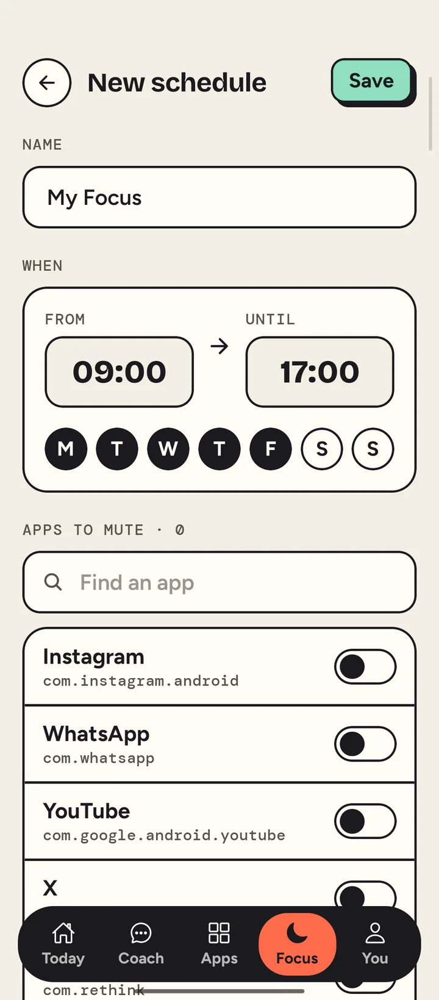
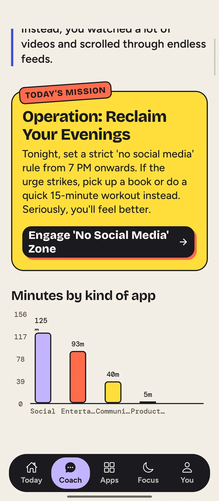

In one day, I opened an app
417
times. That's one every 3 minutes.
Pause before you scroll.
Rethink is an Android app that asks for one slow breath before you open the apps you reach for on autopilot.
Version 1.0 for Android 7 and up. Free, no ads.
9:41
Tap Instagram. On a phone with Rethink, this is where the pause starts.
How it's built
React Native draws the screens. The pause is native Kotlin: an accessibility service sees an app come to the front, and one small pure function decides what happens next.
- Window eventAndroid reports that a new window came to the front.
AccessibilityService - Real app switch?Keyboards, the notification shade, calls and repeats are filtered out.
ForegroundTracker - DecisionBlock, gate, shield or allow, from config and the current session.
PolicyEngine - Pause screenA native Compose screen opens over the app.
GateActivity - OutcomeWhat you chose is logged and sent back to JS for stats.
EventLog
Try the decision engine
Pick a situation. The checks run in the same order as PolicyEngine.decide().
- Is it blocked by a limit or focus hours?
- Is the pause on for this app?
- Is there a session from earlier?
- Did you leave more than the grace window ago?
- Is the time you asked for used up?
Pick a situation
// PolicyEngine.kt: no Android, no I/O. Order matters.
fun decide(
pkg: String, config: GuardConfig,
session: Session?, now: Long,
): Decision {
config.blockRuleFor(pkg, now)
?.let { return Decision.Block(pkg, it) }
if (config.interventionRuleFor(pkg, now) == null)
return Decision.Allow(NOT_GUARDED)
if (session == null) return Decision.Gate(pkg)
val graceMs = maxOf(config.gate.graceSeconds * 1000L, MIN_GRACE_MS)
if (!session.isOpen && now - session.leftAt > graceMs)
return Decision.Gate(pkg)
if (session.isExhausted) return Decision.Shield(pkg)
return Decision.Allow(
if (session.isOpen) ACTIVE_SESSION else WITHIN_GRACE)
}- Screens
- React Native 0.83 and TypeScript, React Navigation, SVG charts, a small motion kit for entrances and presses.
- Native Android
- Kotlin AccessibilityService, Jetpack Compose for the pause screen, UsageStatsManager for screen time, background fetch.
- Bridge
- Typed native modules. JS pushes the rules to Kotlin on every change and drains outcome events back, so the pause works even when the JS side is asleep.
- Backend
- Node and Express on Vercel, Supabase for accounts and data, Gemini through LangChain for the coach.
- Tests
- 33 JVM unit tests on the decision engine, the app-switch filter, the pause content and the screen-time math.
Everything it does, screen by screen
Scroll through the app, and tap the phone as you go.
WEDNESDAY 28 OCTOBER
Good evening, Rahul.
Tap an hour, a day or a date to see what happened.
- PEAK HOUR
- 7 PM
- 51m used
- OPENS
- 417
- every 3 min
- OFF PHONE
- 5h
- longest stretch



How long on Instagram each day?
QUICK PICKS
When the time runs out, Instagram is blocked for the rest of the day.

BLOCKED
Instagram is blocked

Your day as a clock
Home is a 24-hour dial. Each bar is an hour, and its length is how long you were on your phone. The busiest hour is in tomato.
Tap an hour on the phone to see what happened in it. 7 PM was the busiest: 51 minutes and 83 opens, mostly Instagram.
Hour totals are from one of my days. The app split per hour is approximate.
Week, month and every app
The last 7 days: your daily average, heaviest and lightest day, and how many times you opened an app.
The last 30 days as a calendar, darker on the days you used your phone more.
Every app with its time and number of opens. Filter by kind of app, or search for one.
Limits that hold
Pick a limit on the phone and tap Save limit. Then watch the day go by.
Focus hours mute the apps you choose, on the days you pick. Try opening Instagram while one is on.
A coach that reads your week
The coach looks at how you actually used your phone, then gives you one mission for today and a chart of where the minutes went.
Built on Gemini, through a Node and Express API.
Try it on your phone.
Version 1.0, for Android 7 and up.
On a computer? Scan this with your phone's camera to download it there.
Installing
- Download the APK on your Android phone and open it.
- If Android asks, allow your browser to install apps.
- Open Rethink and give it Usage access so it can show your screen time.
- To use the pause, turn on the Rethink accessibility service when the app asks.
Why it asks for these
- Usage access
- Reads how long each app was open and how often. This feeds the dial, the weekly views and the coach.
- Accessibility service
- Tells Rethink which app just came to the front, so the pause can appear before it. It can't see or read what's on screen.